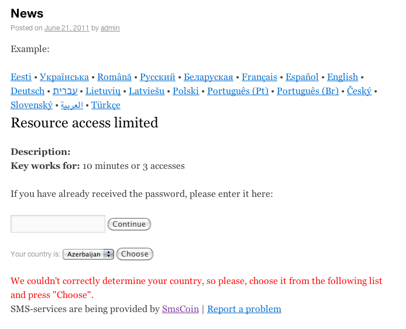
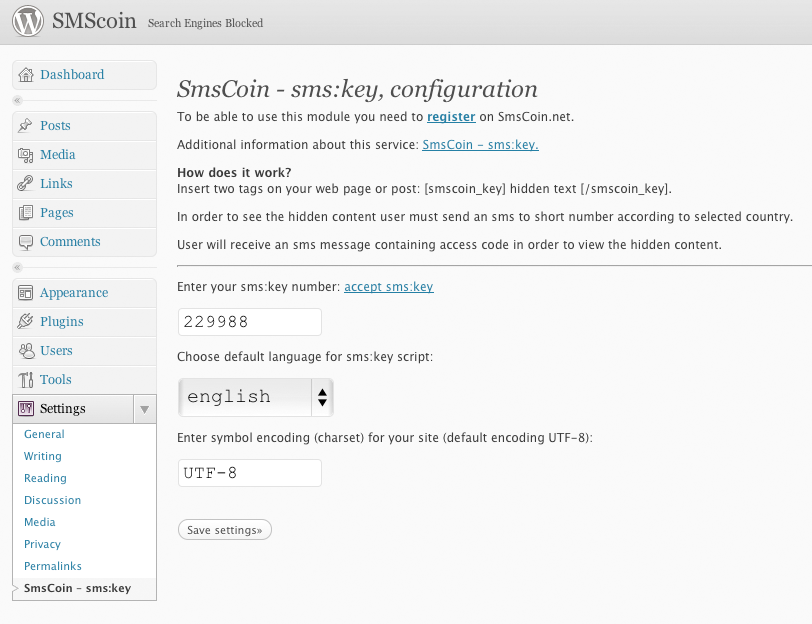

SmsCoin - sms:key hidden text payment module (for WordPress)via SMS message, based on sms:key service.All information within this software product is the intellectual property of SmsCoin, Israel. This software can be used by http://smscoin.net/ clients for sms:key service only. Any other use of this software is a violation of the company's right and will be pursued according to operating law. SmsCoin, Israel, will not be held liable for any loss or damage of any kind as a result of using this software, including any lost revenues and/or data. |
How the module works:This plugin allows you to provide a paid access to any content on your website. In reply message user receives a short password (keyword)text which enables him to access any content you hide with this sms:key. You decide how many times and how long this password is valid for. Example:  |
Setup process:
Example:  Installation process is completed!How it works:Uninstallation:Module was successfully uninstalled. |